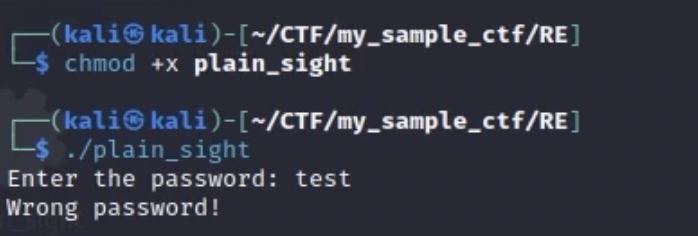
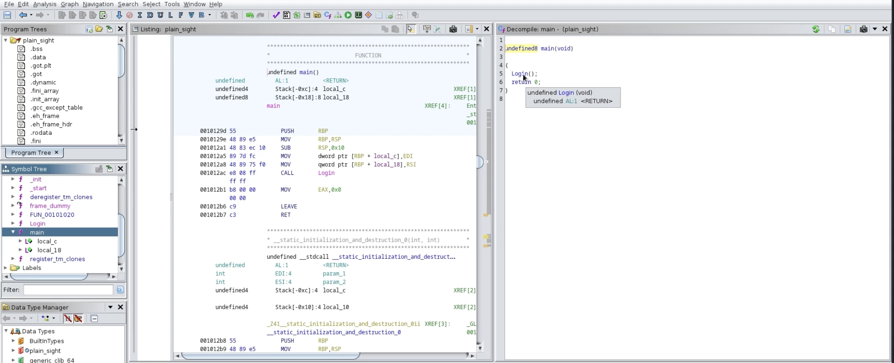
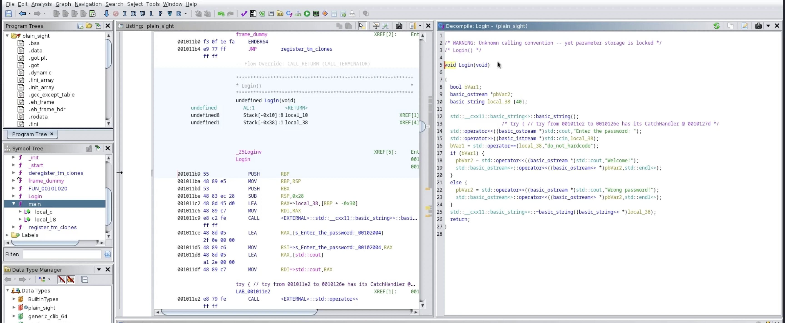
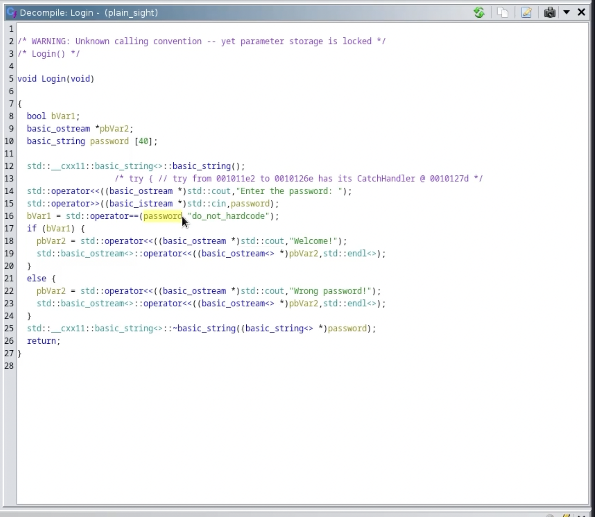
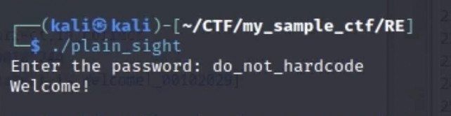

Reverse Engineering I3a4dam's Plain sight

So in this CTF challenge from crackme, I am given a binary file that contains a program that wants me to crack it so I can capture the actual flag inside. When given a binary file like this, my though process is to first make it executable using chmod +x plain_sight, and then run it to see what the actual program does
Great, so now I know that its a program that asks for a password and then im asssuming it gives you the flag if you get the password right, however right now I have no way of knowing what the password is. Now I can aproach this problem two ways, number one is to look at the problem statically or dynamically. When you look at a problem statically, then you are going to examine the program without running it. You basically are going to be looking at whats going on inside the actual code of the program to be able to try to determine what would happen if you run it. I'm going to look at the program statically, and im going to be using ghidra to actually decomplile the program so I can look at whats going on and try poke at some things. So on the left you have the actual assembly code from the program and on the right, you have the decomplied code where ghidra basically tries its best to emulate the source code from the main function
Alright cool, so from the ghidra menu, I just basically selected the main function cause I know that most programs written in C compile from the main function. Alright, so the first thing I notice is that ghidra doesn't know what value the main function is returning so it just has undefined8. I also notice that in the main function, it calls a login function so i'm going to investigate that next.
Alright now here is where it gets really fun. You see in the decomplied part that this program was written in c++. It sends the string "Enter the password: " to standard output (the terminal) and then it takes user input from the standard input and then sends that to the variable local_38. Now one of the things I really like about ghidra is that you can rename variables so im just going to rename the local_38 variable to password. 
Now this challenge is called "plain sight" so its pretty obvious how to solve this problem. You see that it uses the == operator to compare the user input to the string "do_not_hardcode". Then it has a if else block which is im assuming if the user string is right, then it grants access and if the user string is wrong it denies accesss, so im assuming the password is do_not_hardcode. 
So now I just enter in the password "do_not_hardcode" and I get access. Super fun challenge!